FLOWER17 Species classification using OpenCV and Scikit-Learn¶
The model we’ll be using is the RandomForestClassifier which is a part of
dffml-model-scikit, a DFFML plugin which allows you to use Scikit-Learn via DFFML.
We’ll also be using the various operations from dffml-operations-image, which is
a DFFML plugin which allows you to do image processing via DFFML and
dffml-config-yaml and dffml-config-image for loading yaml and image files.
We can install them with pip.
$ pip install -U dffml-model-scikit dffml-operations-image dffml-config-yaml dffml-config-image
Create a dataflow config file which will be used by the
DataFlowSource to preprocess
the data before feeding it to the model.
Our dataflow extracts features from the data which will then be used by the machine learning model. Since the dataset contains flowers, we extract features that quantify the color, shape and texture of each flower image.
We use the following set of operations from the dffml_operations_image plugin which use functions provided by OpenCV library, which the dataflow will run through to extract features.
resize |
This operation resizes the images up or down to the specified size. |
convert_color |
This operation uses the OpenCV function cv2.cvtColor and converts the image from one colorspace to another. |
calcHist |
This operation extracts the histogram from the image array and is used in this tutorial to quantify the colors present in a flower image. |
normalize |
This operation will be used to normalize the value range of the histogram here. |
HuMoments |
This operation calculates the seven Hu invariants which quantifies the information regarding the orientation of the image. Image Moments |
Haralick |
This operation extracts the texture features from the image. |
flatten |
This operation returns a copy of numpy array collapsed into 1 dimension. |
The dataflow visualised:
We then create the dataflow config file, using the dataflow create command.
dffml dataflow \
create \
resize \
calcHist \
Haralick \
HuMoments \
gray=convert_color \
hsv=convert_color \
flatten \
normalize \
get_single \
-configloader yaml \
-inputs \
'[500,500,3]'=resize.inputs.dsize \
'[0,1,2]'=calcHist.inputs.channels \
'None'=calcHist.inputs.mask \
'[8,8,8]'=calcHist.inputs.histSize \
'[0,256,0,256,0,256]'=calcHist.inputs.ranges \
BGR2GRAY=convert_color.inputs.code=gray \
BGR2HSV=convert_color.inputs.code=hsv \
'[{"Histogram": "flatten.outputs.result"},{"HuMoments": "HuMoments.outputs.result"},{"Haralick": "Haralick.outputs.result"}]'=get_single_spec \
-flow \
'[{"seed": ["image"]}]'=resize.inputs.src \
'[{"resize": "result"}]'=hsv.inputs.src \
'["hsv"]'=hsv.inputs.code \
'[{"hsv": "result"}]'=calcHist.inputs.images \
'[{"calcHist": "result"}]'=normalize.inputs.src \
'[{"normalize": "result"}]'=flatten.inputs.array \
'[{"resize": "result"}]'=gray.inputs.src \
'["gray"]'=gray.inputs.code \
'[{"gray": "result"}]'=HuMoments.inputs.m \
'[{"resize": "result"}]'=Haralick.inputs.f |
tee features.yaml
To re-create the visualization of the dataflow above, run:
dffml dataflow diagram features.yaml -simple -stages processing -configloader yaml
Copy and pasting the output of the above code into the mermaidjs live editor results in the graph.
Train the model.
dffml train \
-model scikitrfc \
-model-features \
Histogram:int:$((8*8*8)) \
HuMoments:int:7 \
Haralick:int:13 \
-model-predict label:str:1 \
-model-directory tempdir \
-sources images=df \
-source-images-source dir \
-source-images-source-foldername flower_dataset/train \
-source-images-source-labels \
crocus windflower fritillary tulip pansy dandelion tigerlily sunflower \
bluebell cowslip coltsfoot snowdrop daffodil lilyvalley iris buttercup daisy \
-source-images-source-feature image \
-source-images-dataflow features.yaml \
-source-images-features image:int:$((500*500)) \
-log critical
Assess the model’s accuracy.
dffml accuracy \
-model scikitrfc \
-model-features \
Histogram:int:$((8*8*8)) \
HuMoments:int:7 \
Haralick:int:13 \
-model-predict label:str:1 \
-model-directory tempdir \
-sources images=df \
-source-images-source dir \
-source-images-source-foldername flower_dataset/test \
-source-images-source-labels \
crocus windflower fritillary tulip pansy dandelion tigerlily sunflower \
bluebell cowslip coltsfoot snowdrop daffodil lilyvalley iris buttercup daisy \
-source-images-source-feature image \
-source-images-dataflow features.yaml \
-source-images-features image:int:$((500*500)) \
-log critical
The output is:
0.27450980392156865
Create an unknown_images.csv file which contains the filenames of the images to predict on.
cat > unknown_images.csv << EOF
key,image
daisy,daisy.jpg
pansy,pansy.jpg
tigerlily,tigerlily.jpg
buttercup,buttercup.jpg
EOF
In this example, the unknown_images.csv file contains the filenames of the following images


Predict with the trained model.
dffml predict all \
-model scikitrfc \
-model-features \
Histogram:int:$((8*8*8)) \
HuMoments:int:7 \
Haralick:int:13 \
-model-predict label:str:1 \
-model-directory tempdir \
-sources images=df \
-source-images-source csv \
-source-images-source-filename unknown_images.csv \
-source-images-source-loadfiles image \
-source-images-dataflow features.yaml \
-source-images-features image:int:$((500*500)) \
-log critical \
-pretty
Output
Key: daisy
Record Features
+----------------------------------------------------------------------------------------------------------------------------------------------+
| image | [[111, 126, 128], [110, 125, 127], [109, 124, ... (length:442) |
+----------------------------------------------------------------------------------------------------------------------------------------------+
| Histogram | 0.45565221302156844, 0.005917561208072317, 0.0 ... (length:512) |
+----------------------------------------------------------------------------------------------------------------------------------------------+
| HuMoments | 0.0009669592943914033, 1.0846416009082036e-09, ... (length:7) |
+----------------------------------------------------------------------------------------------------------------------------------------------+
| Haralick | 0.0002911835961447346, 805.9875298101111, 0.89 ... (length:13) |
+----------------------------------------------------------------------------------------------------------------------------------------------+
Prediction
+----------------------------------------------------------------------------------------------------------------------------------------------+
| label |
+----------------------------------------------------------------------------------------------------------------------------------------------+
| Value: daisy | Confidence: 0.27450980392156865 |
+----------------------------------------------------------------------------------------------------------------------------------------------+
Key: pansy
Record Features
+----------------------------------------------------------------------------------------------------------------------------------------------+
| image | [[153, 92, 136], [120, 59, 103], [112, 51, 95] ... (length:480) |
+----------------------------------------------------------------------------------------------------------------------------------------------+
| Histogram | 0.07277950023229314, 0.0036389750116146567, 0. ... (length:512) |
+----------------------------------------------------------------------------------------------------------------------------------------------+
| HuMoments | 0.0012999255874069954, 6.64033598556376e-09, 5 ... (length:7) |
+----------------------------------------------------------------------------------------------------------------------------------------------+
| Haralick | 0.00023571813835279273, 5094.983351862911, 0.5 ... (length:13) |
+----------------------------------------------------------------------------------------------------------------------------------------------+
Prediction
+----------------------------------------------------------------------------------------------------------------------------------------------+
| label |
+----------------------------------------------------------------------------------------------------------------------------------------------+
| Value: sunflower | Confidence: 0.27450980392156865 |
+----------------------------------------------------------------------------------------------------------------------------------------------+
Key: tigerlily
Record Features
+----------------------------------------------------------------------------------------------------------------------------------------------+
| image | [[0, 15, 1], [0, 15, 1], [0, 15, 1], [0, 15, 1 ... (length:426) |
+----------------------------------------------------------------------------------------------------------------------------------------------+
| Histogram | 0.2058240085942461, 0.0, 0.0, 0.0, 0.0, 0.0, 0 ... (length:512) |
+----------------------------------------------------------------------------------------------------------------------------------------------+
| HuMoments | 0.0017531570284714357, 1.2844091501399027e-08, ... (length:7) |
+----------------------------------------------------------------------------------------------------------------------------------------------+
| Haralick | 0.000361688295517474, 2520.9790741688075, 0.64 ... (length:13) |
+----------------------------------------------------------------------------------------------------------------------------------------------+
Prediction
+----------------------------------------------------------------------------------------------------------------------------------------------+
| label |
+----------------------------------------------------------------------------------------------------------------------------------------------+
| Value: dandelion | Confidence: 0.27450980392156865 |
+----------------------------------------------------------------------------------------------------------------------------------------------+
Key: buttercup
Record Features
+----------------------------------------------------------------------------------------------------------------------------------------------+
| image | [[10, 18, 17], [10, 18, 17], [10, 18, 17], [10 ... (length:424) |
+----------------------------------------------------------------------------------------------------------------------------------------------+
| Histogram | 0.03706228906355396, 0.0030885240886294966, 0. ... (length:512) |
+----------------------------------------------------------------------------------------------------------------------------------------------+
| HuMoments | 0.0013087594154773934, 9.914047463163542e-08, ... (length:7) |
+----------------------------------------------------------------------------------------------------------------------------------------------+
| Haralick | 0.0019601722890134747, 6277.732845406246, 0.51 ... (length:13) |
+----------------------------------------------------------------------------------------------------------------------------------------------+
Prediction
+----------------------------------------------------------------------------------------------------------------------------------------------+
| label |
+----------------------------------------------------------------------------------------------------------------------------------------------+
| Value: buttercup | Confidence: 0.27450980392156865 |
+----------------------------------------------------------------------------------------------------------------------------------------------+
The model predicts 2 of the 4 images correctly!
The accuracy of the model can be increased by using various preprocessing techniques for example scaling all the feature vectors within the range [0,1].
Alternatively using Convolutional Neural Networks vastly improves the accuracy! - The Transfer Learning approach with Convolution Neural Networks